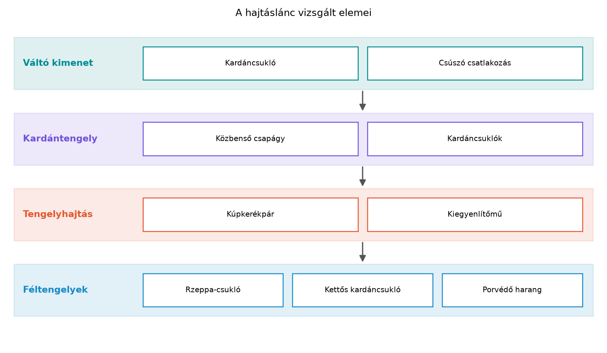

A műhelyben gyakori panasz a kanyarban jelentkező kattogó, ropogó zaj, a gyorsításkor fellépő vibráció, vagy a hajtómű környékén észlelt olajszivárgás. A jármű alá nézve a szerelőnek el kell döntenie, hogy a kardántengely csuklója kopott-e, a féltengelycsukló porvédő harangja elszakadt-e, vagy maga a kiegyenlítőmű sérült. Ezek az alkatrészek pontosan illesztett, nagy igénybevételnek kitett szerkezeti egységek, ahol a hibás szerelés nemcsak további meghibásodáshoz, hanem biztonsági kockázathoz is vezethet, például kirepülő féltengely vagy hirtelen blokkoló hajtáslánc formájában. Ezért minden javításnál a gyártói javítási utasítás, a megfelelő szerszámok és az ellenőrzött értékek az irányadók.
Képzeljünk el egy hosszirányú motorral szerelt, hátsókerék-hajtású járművet. A váltó kimenő tengelyétől egy csőből és két csuklóból álló kardántengely fut hátra, középen egy gumibakkal felfüggesztett közbenső csapággyal, hogy a hosszú tengelyt megtámassza és a hajlító rezgéseket csillapítsa. A tengely hátul a tengelyhajtás házához csatlakozik, ahol a kúpkerékpár a nyomatékot a kerekek irányába fordítja, a kiegyenlítőmű pedig szétosztja a bal és jobb féltengelyre. Elsőkerék-hajtású járműnél a váltó közvetlenül a hajtóműházban lévő kiegyenlítőműre dolgozik, onnan a féltengelyek a kerékagyhoz vezetnek; a külső csukló rendszerint állandó szögsebességű Rzeppa-csukló, a belső pedig gyakran csúszó tulajdonságú tripod vagy kettős kardáncsukló. A következő rétegábra a hajtáslánc elemeit mutatja, ahogy a javítás során sorra vesszük őket.

Definíció. A kardántengely olyan, rendszerint csőből, csuklókból és csúszó csatlakozásból álló hajtáselem, amely a váltó és a tengelyhajtás között viszi át a nyomatékot változó szög és hosszváltozás mellett. A féltengely a kiegyenlítőműtől a kerékagyig viszi a nyomatékot, és legalább egy, a kerék felőli oldalon állandó szögsebességű csuklót tartalmaz, hogy a kormányzott kerék elfordulása alatt is egyenletes legyen az erőátvitel.
Összefüggés. A kiegyenlítőmű fordulatszám- és nyomatékmegosztása a Tengelyhajtás, kiegyenlítőmű és differenciálzárak alfejezetben bemutatottak szerint:
ahol a kiegyenlítőmű háza (a tányérkerék) fordulatszáma, és a féltengelyek fordulatszáma, a bemenő nyomaték, , pedig az egyes féltengelyekre jutó nyomaték. Ez nyitott differenciálműre érvényes; a differenciálzár vagy önzáró változat ettől eltérően viselkedik.
Szabály. A kardántengely csuklóinak egyenlő hajlásszögűeknek kell lenniük, és a közbenső tengely két villájának egy síkban kell állnia (fázishelyes szerelés), ahhoz, hogy a kimenő és bemenő tengely szögsebessége egyenlő legyen; ellenkező esetben periodikus sebességingadozás és vibráció lép fel. Ezt a szerelés során a gyártói beállítási szögek betartásával biztosítják.
Az alábbi ábra a jelenséget mutatja: egy keresztcsukló kimenő szögsebessége fordulatonként kétszer ingadozik, és az ingadozás a hajlásszöggel nő (). Kettős csuklónál az ingadozás csak egyenlő hajlásszög és egy síkban álló (fázishelyes) villák mellett oltódik ki. A HTML-változatban a két hajlásszög és a villák fázisa állítható, a forgó tárcsák a szögeltérést mutatják.
A hosszirányú hajtásláncú járművek kardántengelye jellemzően:
A kardántengely jellemző hibái: kopott csukló (tűgörgők, keresztdarab), elfáradt csúszó fogazat, elöregedett közbenső csapágy gumi, hajlott vagy kiegyensúlyozatlan cső, sérült hajtótárcsa, illetve a csuklók nem megfelelő hajlásszöge. A tünetek: gyorsításkor vagy lassításkor fellépő dübörgés, vibráció, kanyarban csikorgás.
Bontás előtt a csúszó csatlakozás és a karimák fázis- és kiegyensúlyozási helyzetét meg kell jelölni, különben visszaszerelés után rezgés lép fel. Az alábbi ábra a műhelyi fogást mutatja: (1) festék- vagy pontozójel a karimákon és a csúszó csatlakozás két felén, (2) kiszerelés, a tengely alátámasztása, (3) visszaszerelés a jelek egyeztetésével, (4) a közbenső tengely két villája egy síkban (helyes) és 90°-kal elforgatva (hibás). A HTML-változatban a helyes és a hibás villaállás gombbal váltható.
Az elsőkerék-hajtású és független felfüggesztésű járművek féltengelycsuklói:
A porvédő harang (gumiharang) feladata a kenőzsír megtartása és a szennyeződés távoltartása. Ha elszakad, a zsír kifolyik, a csukló vízzel és porral szennyeződik, gyorsan kopik, és kattogó hangot ad kanyarban.
A kiegyenlítőmű típusai:
A kiegyenlítőmű jellemző hibái: kopott fogazat, törött fogak, csapágykopás, holtjáték növekedése, szivárgó szimmeringek, zaj terhelés alatt, fémreszelék az olajban.
Az összkerékhajtási rendszerek szerelésekor a Összkerékhajtás alfejezetben ismertetett típusokat kell figyelembe venni: állandó, kapcsolható és automatikusan kapcsolódó rendszerek. Itt a kardán, a féltengely és a differenciálmű javítási műveletei hasonlóak, de emellett osztómű, középső differenciál vagy lamellás tengelykapcsoló is található; ezek olajcseréje, szivárgásmentessége és vezérlése is kritikus. Elektromos hátsó tengely esetén a HV-rendszerre vonatkozó biztonsági előírások lépnek életbe.
Számítás. Egy hátsókerék-hajtású jármű váltójának kimenő fordulatszáma . A tengelyhajtás áttétele . Mekkora a kiegyenlítőmű házának (a tányérkeréknek) fordulatszáma és a féltengelyek fordulatszáma egyenesben, ha a kerék csúszásmentesen gördül?
A kardántengely (kúpkerék) fordulatszáma 1800 1/min, a tányérkeréké, vagyis a kiegyenlítőmű házáé ennek az -ad része:
Egyenesben a bal és jobb féltengely fordulatszáma egyenlő, ezért:
Számítás. Ugyanez a jármű kanyarodik. A bal kerék , a jobb kerék fordulatszámon gördül. Mekkora a kiegyenlítőmű házának fordulatszáma? Ellenőrizze, hogy a nyomatékmegosztás egyenlő-e.
A képlet alapján:
A nyitott kiegyenlítőmű a nyomatékot egyenlően osztja, tehát , függetlenül a fordulatszám-különbségtől. Ez a példa mutatja, miért pörög ki könnyen az egyik kerék jégen: a másik csak ugyanakkora nyomatékot kap, ami nem elegendő a tapadáshoz.
Hibás példa. A szerelő a kardántengelyt úgy szereli vissza, hogy a csuklók hajlásszöge nem egyenlő, mert elhagyta a hátsó híd alátétjét. Az autó gyorsuláskor rezgést mutat. A rezgés oka a keresztszemes csukló szögsebesség-ingadozása; a megoldás a gyártói hajlásszög visszaállítása.
A munkák után mindig ellenőrizni kell:
Javítási munkalap: féltengelycsukló porvédő harang cseréje
Cél: a külső Rzeppa-csukló sérült porvédő harangjának cseréje, a csukló tisztítása és újrazsírozása, majd a féltengely visszaszerelése.
Jármű- és adatazonosítás: az adott jármű típusa, rendszáma, futómű-kialakítása, gyártói nyomatékok és kenőanyag-specifikációk (ellenőrizendő: gyártói adat).
Szükséges szerszámok: kerékkulcs, emelő és biztosító bakok, nyomatékkulcs, csavarhúzó, fogó, hézagmérő, csiszolóvászon, tisztítókendő, új porvédő harang, kenőzsír (a csuklóhoz előírt típus), bilincs, új tengelyanya (ha előírt).
Biztonsági korlát. A feladat tanműhelyi környezetre, oktató felügyeletére és a gyártói javítási utasítás betartására vonatkozik; a megadott értékek tanulási példák.
Munkavédelmi és környezetvédelmi lépések: viselj védőkesztyűt a forró alkatrészek és éles fémrészek miatt; a járművet emelőn emeld, és bakra támaszd, mielőtt alámennél; a kiürült kenőzsírt és a szennyezett rongyot tedd zárt, címkézett veszélyes hulladék gyűjtőbe; a régi porvédő harangot ne égesd el.
Munkalépések:
A munkalap kézi műveleteit az alábbi képsor mutatja: a bilincsek levágása, a csukló lehúzása (a ketrecre ütni tilos), a csukló kimosása és ellenőrzése, az új kis bilincs és harang felhúzása, a zsír elosztása, a csukló visszaütése új rögzítőgyűrűvel és húzópróba, végül a levegő kiengedése és a bilincsek zárása. A HTML-változatban a képsor lépésenként lejátszható.
Tipikus hibák:
Eset: egy elsőkerék-hajtású ferdehátú autó tulajdonosa kanyarban kattogó, gyorsuláskor erősödő zajra panaszkodik. A szerelő a járművet emelőre teszi, és ellenőrzi a féltengelycsuklókat: a bal külső csukló porvédő harangja elszakadt, a zsír kiszóródott, a csukló fémfelülete korróziós kopást mutat. A belső oldal ép, a jobb oldal is jó. A diagnózis: a porvédő harang sérülése miatt a csukló tönkrement. A javítás a fenti munkalap szerint a teljes külső csukló cseréje új porvédő haranggal és kenőzsírral. A próbaút után a zaj megszűnt. A tanulság: a porvédő harang apró sérülését is azonnal javítani kell, mert a csukló cseréje sokkal drágább.
1. feladat (A). Ismertesse röviden a Rzeppa-csukló és a kettős kardáncsukló közötti alapvető különbséget, és adja meg, melyiket hol alkalmazzák leggyakrabban.
2. feladat (A). Egy állandó szögsebességű csuklóval szerelt féltengelynél a motor fordulatszáma 3000 1/min, a váltó áttétele 4. fokozatban 1:1, a kiegyenlítőmű áttétele 3,9:1. Mekkora a féltengelyek fordulatszáma egyenesben?
3. feladat (B). A fenti jármű kanyarodik, a belső kerék 850 1/min, a külső kerék 950 1/min fordulattal forog. Mekkora a kiegyenlítőmű házának fordulatszáma? Mekkora a kardántengely (váltókimenet) fordulatszáma, ha a tengelyhajtás áttétele 3,9:1?
4. feladat (B). Sorolja fel a kardántengely le- és felszerelésének főbb lépéseit, figyelemmel a közbenső csapágy és a csuklók jelölésére.
5. feladat (C). Hibaanalízis: egy összkerékhajtású járműnél a középső differenciálból olajszivárgás látható, és az első tengely felőli oldalon a kardántengely csuklója kopott. Hogyan járna el a javítás során, figyelembe véve az összkerékhajtás sajátosságait?
6. feladat (D). Ügyfélpanasz: az autó 50–70 km/h sebességnél erős rezgést mutat, gyorsításkor és kiengedett gázpedállal is, de kanyarban nem kattog. A szerelő a kerekek kiegyensúlyozását találja jónak. Milyen hibára gyanakszik? Írja le a diagnosztikai lépéseket és a várható mérési eredményeket!
Önellenőrzés – válaszok
1. feladat (A). A Rzeppa-csukló golyós kialakítású, állandó szögsebességű, nagy szögkitérésre képes, ezért a féltengely kerék felőli oldalán használják. A kettős kardáncsukló két keresztszemes kardáncsuklóból áll, állandó szögsebességet csak akkor ad, ha a két csukló hajlásszöge egyenlő; gyakran a belső oldalon vagy régebbi elsőkerék-hajtásokon található.
2. feladat (A). A motor fordulatszáma 3000 1/min, váltó áttétele 1:1, tehát a váltó kimenő fordulatszáma 3000 1/min. A kiegyenlítőmű bemenő fordulatszáma: . Egyenesben a féltengelyek fordulatszáma megegyezik: .
3. feladat (B). A kiegyenlítőmű házának fordulatszáma: . A váltó kimenő fordulatszáma: .
4. feladat (B). A kardántengely leszerelése: először jelölni a csatlakozásokat, majd a csavarok oldása a hajtótárcsánál, a közbenső csapágy tartójának oldása, végül a tengely óvatos kiemelése. A felszerelés fordított sorrendben, a jelölések egyeztetésével, a gyártói meghúzási nyomatékokkal, a hajlásszögek ellenőrzésével, és a közbenső csapágy terhelt állapotban való rögzítésével.
5. feladat (C). Első lépés az összkerékhajtás típusának azonosítása (állandó, kapcsolható, automatikus). Az olajszivárgás forrásának felkutatása, majd a rendszer leürítése. A középső differenciál vagy osztómű kiszerelése, a szimmeringek és a csapágyak ellenőrzése, a kopott kardáncsukló cseréje. Visszaszerelés után az osztómű olajszintjének és a csuklók hajlásszögének ellenőrzése, végül próbaút. Különösen figyelni kell az összkerékhajtás vezérlésének kalibrálására, ha elektronikusan vezérelt rendszerről van szó.
6. feladat (D). A tünetek (állandó rezgés 50–70 km/h-nál, nem kanyarfüggő, kiegyensúlyozott kerekek) elsősorban kiegyensúlyozatlan vagy hajlott kardántengelyre, kopott kardáncsuklóra vagy tönkrement közbenső csapágyra utalnak. Diagnosztikai lépések: emelőn a járművet megemelve a kardántengelyt megforgatva ellenőrizni a radiális és axiális kifutást (mérőórával; gyártói tűrés, pl. < 0,3 mm), a csuklók játékát, a közbenső csapágy gumibakjának állapotát; a hajlásszögek mérése hajlásszögmérővel; szükség esetén a kardántengely kiegyensúlyozása gépen. A mérési eredmények alapján a hibás alkatrészt cserélni kell.
A kardántengely, a féltengelycsuklók és a kiegyenlítőmű a hajtáslánc kritikus elemei, amelyek közvetítik a motor nyomatékát a kerekekhez, miközben lehetővé teszik a kormányzást, a futómű mozgását és a kanyarodást. A kardántengely a hosszirányú hajtásnál csuklókkal és csúszó csatlakozással viszi át a nyomatékot; hibái (kopott csukló, kiegyensúlyozatlanság, közbenső csapágy) vibrációt és zajt okoznak. A féltengelycsuklók (Rzeppa, kettős kardán, tripod) közül a külső mindig állandó szögsebességű; a porvédő harang sérülése csuklókárosodáshoz vezet. A kiegyenlítőmű fordulatszám- és nyomatékmegosztása: , és nyitott kivitelnél . A differenciálzár és az önzáró típusok ezt módosítják. A javítás során a gyártói nyomatékok, hajlásszögek és olajspecifikációk betartása, a csatlakozások jelölése, a jármű biztonságos alátámasztása és a veszélyes hulladékok kezelése alapkövetelmény. A továbbvitt eredmény: a féltengely- és differenciáljavítás itt megismert módszereit a vizsgafelkészülés komplex hibakeresési és szerelési feladataiban alkalmazzuk.